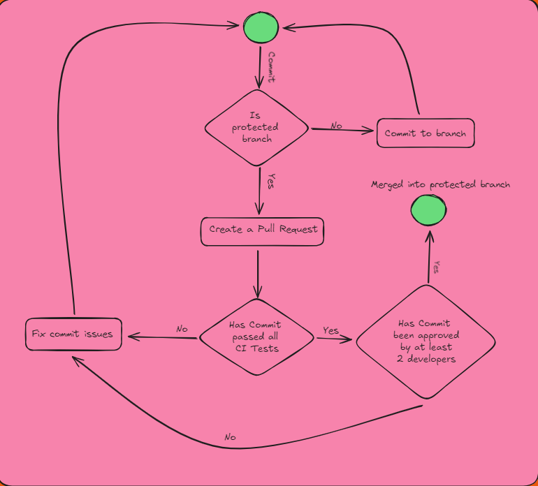

Git Management
Overview
Git is a distributed version control system that allows multiple developers to work on a project simultaneously without overwriting each other's changes. It keeps track of every modification to the project's files, enabling you to revert to previous versions if necessary. Git is essential for collaborative software development as it provides a structured way to manage and merge contributions from different team members, ensuring the project's integrity.
GitHub is an online platform that hosts Git repositories, offering a web-based interface for managing Git projects. It facilitates collaboration by allowing developers to share their repositories, review code, track issues, and deploy applications. GitHub also provides tools for continuous integration and deployment, making it an invaluable resource for modern software development.
Using Git and GitHub in coding projects ensures a well-organized workflow, where changes are documented, collaboration is streamlined, and the project history is preserved, which is crucial for both development and maintenance.
Git Management
Effective Git management involves several key practices to maintain a clean and efficient workflow. These include:
-
Branching Strategy: Implementing a branching strategy (such as GitFlow or Feature Branching) ensures that development, testing, and deployment processes are well-organized. For example, keeping the main branch stable while using feature branches for new developments helps maintain the project's integrity.
-
Commit Practices: Writing clear and concise commit messages, and committing changes frequently with meaningful descriptions, makes it easier to understand the project's history and roll back changes if needed.
-
Merge and Pull Requests: Regularly merging branches and using pull requests to review and discuss changes before integrating them into the main branch is essential for maintaining code quality and preventing conflicts.
By adhering to these Git management practices, teams can ensure that their project remains organized, scalable, and easy to maintain throughout its lifecycle.
General Git Management
The repository exists of multiple branches that have been created for testing, bug fixes, and individual development. This allows the team to develop in parallel. The repository also has a main branch and a main staging branch. Both of these branches are considered "production" ready branches. The staging branch is a buffer for the commits before they are moved into the main branch.
The general git workflow for the backend system can be analyzed in the git workflow diagram but on a high level the workflow is as follows:
- 2 protected branches ( main, main_staging )
- These branches have branch rules that restrict commits being pushed without a PR.
- When creating a PR into the protected branch, the commit will run through a CI pipeline and automatically formats the code, suggests changes and checks for errors through static type checking and pytests
- If an error occurs during the CI pipeline, the PR is rejected until the issues are fixed.
- Developers can commit normally to any other branches
Git Workflow Visualized

The image above illustrates the general workflow for committing changes to the repository. Starting from the green circle, the process unfolds as follows:
- A developer makes a commit.
- Is the branch a protected branch?
- If not protected, the developer can continue committing directly to the branch.
- If protected, the commit cannot be pushed directly; a pull request (PR) is required.
- The developer must create a PR if the branch is protected.
- Once the PR is created, it is automatically run through a Continuous Integration (CI) pipeline that includes code tests and linting checks.
- If the PR fails the CI checks, the developer is notified of the failure and must address the issues, starting the process again from the green circle.
- If the PR passes the CI checks, it proceeds to the review stage, where it must be approved by at least two developers.
- If any reviewer rejects the PR, the developer must resolve the issues and restart the process from the green circle.
- If all reviewers approve the PR, the code is merged into the protected branch.
CI Pipeline
The Continuous Integration (CI) pipeline is a crucial part of our development process, ensuring that code changes meet our project's quality standards before they are merged into the main branch. The CI pipeline is automatically triggered when a developer creates a pull request targeting the main branch. The pipeline consists of several stages:
The pipeline starts by checking out the code and setting up a Python 3.9 environment. It then installs linting tools like Flake8, Pylint, and MyPy.
- Flake8 is used to ensure the code adheres to Python coding standards and is free of syntax errors.
- Pylint provides a more thorough analysis of the code, checking for potential issues such as coding standards violations, errors, and warnings. The pipeline requires a minimum Pylint score of
9.7for the linting stage to pass. - MyPy checks for type safety, ensuring that the code has correct type annotations and is less prone to type-related bugs.
If the linting process succeeds, the pipeline proceeds to the code formatting stage.
- Isort organizes import statements to maintain a clean and consistent order.
-
Black automatically formats the code according to the project's style guidelines. If any formatting changes are required, Black will make these changes, and the pipeline will attempt to commit and push the updated code back to the pull request branch. This ensures that all code merged into the main branch is properly formatted without manual intervention.
-
Automated Code Fixes: During the formatting stage, if Black or Isort detects any required changes, the pipeline commits and pushes these changes back to the pull request branch. This automated process helps maintain consistent code quality by enforcing formatting rules without requiring developers to manually adjust their code.
-
Conditional Execution: The formatting stage runs only if the linting process passes, ensuring that the pipeline does not proceed with code that has linting errors. Additionally, if there are no changes to be made, the pipeline will not attempt to push any updates.
This automated CI pipeline helps maintain high code quality by ensuring that all code is well-structured, adheres to defined standards, and is type-safe. It also streamlines the development process by automatically fixing formatting issues, reducing the effort required by developers to maintain clean and consistent code.
Below is the CI YAML configuration that initializes our pipeline:
name: CI Pipeline
on:
pull_request:
branches:
- main
permissions:
contents: write # Allows pushing changes back to the PR branch
jobs:
lint:
runs-on: ubuntu-latest
steps:
- name: Checkout code
uses: actions/checkout@v3
- name: Set up Python 3.9
uses: actions/setup-python@v4
with:
python-version: "3.9"
- name: Install dependencies
run: |
python -m pip install --upgrade pip
pip install flake8 pylint mypy
- name: Run Flake8
run: flake8 .
- name: Run Pylint
run: pylint --recursive=y --fail-under=9.7 .
- name: Run MyPy
run: mypy . --install-types --non-interactive
format:
needs: lint
if: success() # Run only if lint job succeeds
runs-on: ubuntu-latest
steps:
- name: Checkout code
uses: actions/checkout@v3
with:
ref: ${{ github.head_ref }} # Checkout the PR branch
- name: Set up Python 3.9
uses: actions/setup-python@v4
with:
python-version: "3.9"
- name: Install formatting tools
run: |
python -m pip install --upgrade pip
pip install black isort
- name: Run Isort
run: isort .
- name: Run Black
run: black .
- name: Check for formatting changes
id: check-diff
run: |
git diff --exit-code || echo "Formatting changes detected"
if [ -n "$(git diff)" ]; then
echo "changed=true" >> $GITHUB_ENV
else
echo "changed=false" >> $GITHUB_ENV
fi
- name: Commit formatting changes
if: env.changed == 'true'
run: |
git config user.name "github-actions"
git config user.email "github-actions@github.com"
git add .
git commit -m "Auto-format code" || echo "No changes to commit"
- name: Push formatting changes back to PR branch
if: env.changed == 'true'
run: |
git push origin HEAD:${{ github.head_ref }} || echo "Failed to push changes"